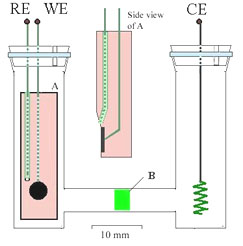
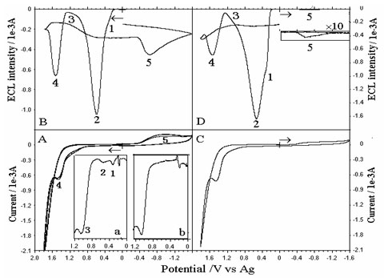
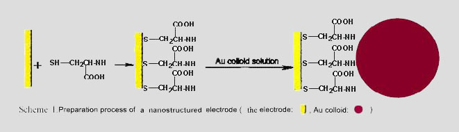
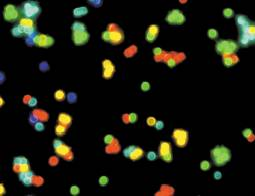
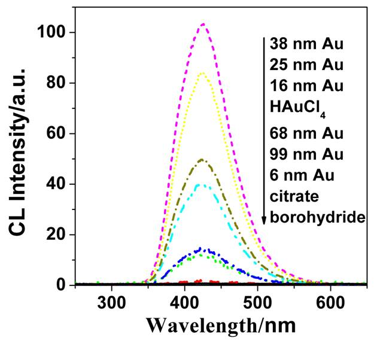
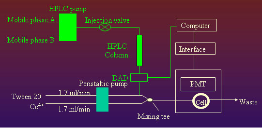
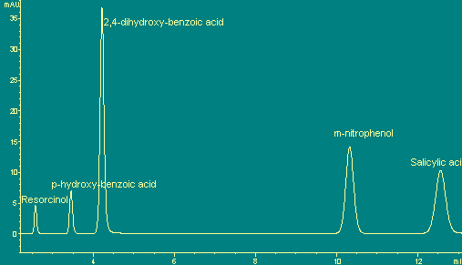

实验室先后承担中国科学院“引进海外杰出人才”基金（“百人计划”，2002）、国家自然科学基金杰出青年基金（2007）、国家自然科学基金 面上项目（1999，2004，2006）三项等纵向科研项目，累计研究经费近500万元。

PRECL电化学池及电极结构图【Ref1】
使用循环伏安驱动电致化学发光，发现电位分辨的电致化学发光（PRECL）现象，即在不同的电位下传统的发光物质具有多个ECL反应通道。而脉冲激发的电致化学发光不能分辨这些通道。对鲁米诺，光泽精，联吡啶-钌等经典化学发光体系在各种电极材料上（包括Pt、Au、Cu、玻碳、石墨充蜡、TiO2覆盖的Ti基电极等）的PRECL行为、
规律及机理进行了系统研究，发现了鲁米诺，光泽精，联吡啶-钌体系的ECL多通道现象和对电极电位、电极材料和电极表面状态的依赖性，提出了各通道的反应机理。
电位分辨的电致化学发光为电致化学发光的研究提供了一条新的研究思路，开辟了一个新的研究领域，推动了电致化学发光的深入研究。其意义在于：（1）对电致化学发光机理研究和探索新的电致化学发光反应具有重要的意义。（2）电位分辨的电致化学发光图类似于循环伏安扫描图，但比循环伏安扫描图更灵敏，一些氧化还原过程在循环伏安扫描图上无峰或有较弱峰，但在电位分辨的电
致化学发光图上可给出清晰的峰，而且在高电位下循环伏安扫描图上有较强的充电电流，使一些氧化还原峰难以观察，而电位分辨的电致化学发光图可观察到这些过程，因此为电极过程及伴随反应的机理研究提供了一个新的高灵敏度的研究手段。（3）通过控制电位，可开发出高灵敏度、高选择性的电致化学发光分析方法，
大大扩展电致化学发光分析方法的应用范围。因此，本项研究工作是电致化学发光基础理论研究的一项重要进展。

鲁米诺在石墨充蜡电极上的PRECL曲线及其与CV曲线的比较【Ref1】
有关上述研究工作的论文先后发表在美国 Anal. Chem. (影响因子5.250)、 J. Electroanal. Chem. (影响因子2.027)等重要杂志上, 审稿人认为：“电致化学发光的多通道发射将是分析科学感兴趣的研究课题之一”。有关工作于2002年4月在英国剑桥大学召开的12th International Symposium on Bioluminescence and Chemiluminescence进
行了大会口头报告，受到同行的关注。
[Ref1]:
H. Cui*, G.Z. Zou, X.Q. Lin
“Electrochemiluminescence of luminol in alkaline solution at a paraffin-impregnated graphite electrode”
Anal. Chem. 2003, 75(3), 324-331. (I.F.=5.250)
本实验室前期的工作发现鲁米诺等体系的电致化学发光(ECL)反应的多通道性以及对电极材料、电极表面状态和电极电位的依赖性。这些结果表明：通过优化电极的组成和结构，可望获得理想的ECL特性。将纳米修饰电极用于电化学和电分析化学的研究近年来已经取得了很大的进展，各种金属、金属氧化物和非金属氧化物纳米粒子或团簇被组装在各种经典电极材料上如金、铂、银、碳等，显示出卓越的表面吸附和分子
识别特性、电催化活性、高度的表面反应活性等。但纳米修饰电极上电致化学发光的研究还鲜为报道。

纳米金修饰金电极的制备流程图【Ref2】
最近，本实验室将纳米金组装在各种传统电极材料上，研究了鲁米诺和光泽精等在这些纳米修饰电极上的ECL行为。发现在纳米金修饰的电极上鲁米诺和光泽精的ECL行为不同于各种传统电极上鲁米诺和光泽精的ECL行为，发光强度明显提高，发光通道数增加，重现性和稳定性明显改善，并且电极寿命长，每次测量前电极表面不需要麻烦的预处理，克服了传统电极表面易污染的重要缺陷。此项结果表明：在纳米金修饰的电极上，鲁米诺和光泽精ECL体系检测的灵敏度可大大提高。目前，我们正在利用纳米金修饰的电极上鲁米诺的ECL特性，发展高灵敏度的ECL生物传感器。
此项工作进一步丰富了人们对物质在介观状态下特殊性质的认识, 对纳米科学和电致化学发光的基础理论研究具有重要的意义。同时，它将推进纳米技术在分析化学中的应用，扩展电致化学发光分析的应用范围。
此项工作由于明显的创新性，于2003年获得了国家自然科学基金的资助，首篇论文于2004年发表在美国Anal. Chem.上。

纳米粒子特殊的光学性质包含着有关纳米粒子能级结构和表面状态等的丰富信息，一直以来都是纳米科学研究的重点之一。目前对于纳米材料光学性质的研究主要包括表面等离子体共振吸收光谱, 表面增强拉曼散射光谱和光致发光等入射光诱导下纳米粒子的光学行为。
化学发光是伴随化学反应的光发射现象，研究相关物理化学过程的热力学、动力学和光发射特性具有重要的理论和应用价值。自从1928年Albrecht1观察到鲁米诺在碱性介质中的化学发光行为以来，各种液相化学发光体系包括鲁米诺及其衍生物、吖啶酯、过氧化草酸酯、酸性高锰酸、联吡啶钌和四价铈等的化学发光行为已被广泛研究。但是，对于液相化学发光行为的研究一般仅局限于分子和离子水平以及简单的分子聚集体如胶束和微乳液等。近两年，以半导体纳米粒子作为发光体的电致化学发光和化学发光行为已经引起了人们的关注。

不同粒径纳米金溶胶中鲁米诺－过氧化氢体系发光光谱
最近, 我们发现纳米金可作为还原剂、催化剂诱导液相化学发光反应。如纳米金溶胶与KIO4-NaOH/Na2CO3体系反应可观察到较强化学发光，其化学发光光谱显示出三个发光峰，分别对应于单线态氧(490~500nm)，二氧化碳双分子(430~450nm)以及Au(I)中间体(380~390nm, 430~450nm)的发射。相关工作已被美国化学会物理化学杂志发表(J. Phys. Chem. B. 2005, 109, 3099)。在另一工作中，我们研究了纳米金对鲁米诺化学发光反应的影响，发现纳米金对鲁米诺化学发光反应具有良好的催化作用，并具有良好的分析化学应用潜力，相关工作已被美国化学会的分析化学杂志（Anal. Chem.，影响因子5.250）接受。深入的工作正在进行之中。
此项工作将液相化学发光反应的研究对象从分子、离子体系扩展到金属纳米体系，为化学发光的研究开辟新的研究方向。它将进一步丰富人们对微尺度结构材料特殊性质尤其是化学反应活性及光学性质的认识,对纳米科学和化学发光的基础理论研究具有重要的意义，为发展新型传感器技术、发光成像技术以及免疫分析技术等奠定了理论基础。
尽管人们已发现许多化学反应可产生化学发光， 但大部分化学反应的发光量子产率较低，可用于化学发光分析的化学反应却较少，由此限制了化学发光分析的应用范围。因此，探索新的化学发光反应是目前化学发光分析的重要研究课题之一。我们发现了Ce(IV)+Tween20、Ce(IV)+罗丹明6G+酚类化合物化学发光新体系，提出了其反应机理，建立了多种酚类和黄酮类化合物的高灵敏度化学发光分析新方法。

图为Ce(IV)+Tween20体系高效液相色谱－化学发光检测法联用的流路图。

图为一组实际样品应用Ce(IV)+Tween20体系高效液相色谱－化学发光检测法的色谱图。
此项工作为发展宽响应的液相色谱化学发光检测器奠立了重要的基础，在食品安全检测、药物分析、环境监测等领域具有重要的应用前景。关于Ce (IV) + Tween 20体系的首篇论文于2001年发表在Analyst上，2001年5月该篇论文在Analyst上被点击次数进入前10名，排名第三。
化学发光和电致化学发光分析可根据参与物与化学发光强度的线性关系对参与物进行测定。 但化学发光与电致化学发光的体系较少，可探测的物种非常有限。对不参与化学反应的物质的测定常根据其对化学发光或电致化学发光反应的抑制和增强作用进行分析。但抑制和增强作用的规律和机理尚不清楚，抑制剂和增强剂的发现常常需要通过反复试验进行摸索。
我们率先系统探索了一系列酚类和苯胺类化合物以及氨基酸在各种条件下对鲁米诺-铁氰化钾、鲁米诺-H2O2-Co(II)、鲁米诺-DMSO-OH、鲁米诺-H2O2-IO4-、光泽精-H2O2-Co(II)、Ce(IV)-Tween20等化学发光体系和鲁米诺、Ru(bpy)32+/C2O42-, Ru(bpy)32+/TPA电致化学发光体系的影响，发现一系列酚类和苯胺类化合物以及氨基酸的化学发光与电致化学发光的抑制和增强作用规律及其与分子结构、化合物的浓度、溶液pH的相关性，提出了其化学发光与电致化学发光的抑制和增强作用机理，建立了一系列生物和环境重要的酚类化合物、苯胺类化合物以及氨基酸的流动注射化学发光抑制和增强分析法和同时测定多种化合物的高效液相色谱－化学发光抑制和增强检测法。此项工作对于深入认识化学发光抑制和增强机理具有重要的理论意义，对新的增强剂和抑制剂的发现具有重要的指导意义。与此同时，扩展了化学发光与电致化学发光分析的应用范围，在环境监测、食品分析、药物分析、烟草分析等领域具有重要的应用价值。